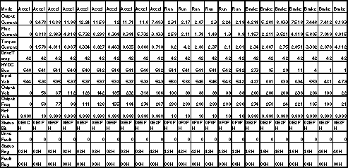

Proprietary to General Electric
Direction 5114045-800, Rev# 10
LightSpeed 4.X Service Information (Advanced)
Proprietary to General Electric |
Give the user examples of Normal Operating Results for the Rotor Control.
Reference Documents: Schematic - HEMRC_IF, HVDC_Sense, Chopper_Cntl, AC_Dist, HCB.
Select [DIAGNOSTICS] .
Select [X-RAY GENERATION] .
Select [ROTOR CONTROL] .
FRUs Involved:
HEMRC Interface Board - HIF (All phases)
HEMRC AC DRIVE (All phases)
Fuses F1, F2 on interface Bd (would produce a Primary Error of “NO HVDC”)
HVDC BUS (1st 4 Phases)
120 VAC from Slip Ring Assembly (last 4 Phases)
T1 transformer (last 4 Phases)
Bridge rectifier - CR1 (1st 4 Phases)
Before beginning this procedure, please read the safety information in Equipment Service - Gantry.
The HEMRC rotor has 9 phases of operation. 3 Accel phases, 2 Run phases, 3 Brake Phases, and idle. The 3 Accel and the 1st run phase use HVDC, the rest of the phases use 120 VAC stepped up to 380VAC by T1.
Run the XRAY Generation / Rotor control Diags with “Test Selection: HEMRC Manual”.
You should be able to observe the following Parameters in the “Test Window”:
Rotor Op Mode
Drive Output Current
Drive Flux Current
Drive Torque Current
Drive Temperature
HVDC Bus Voltage
Drive Input Voltage
Drive Output Voltage
Drive Output Frequency
Rotor Ref Voltage
Drive Status Bit Map
Drive Fault Code
Status Register
Fault Register
| NOTE: | For a full size version of this illustration, click on the pdf icon below. |
Media File 1: Full Size Illustration: Results with CRPDU Unregulated HVDC

Illustration 1: Results with CRPDU Unregulated HVDC
